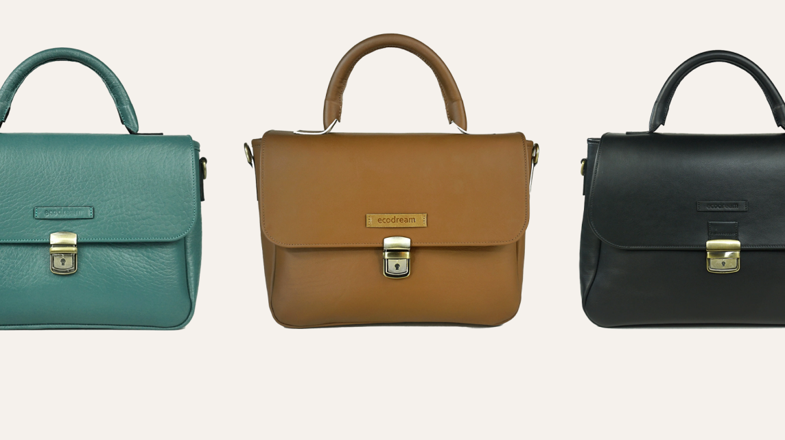
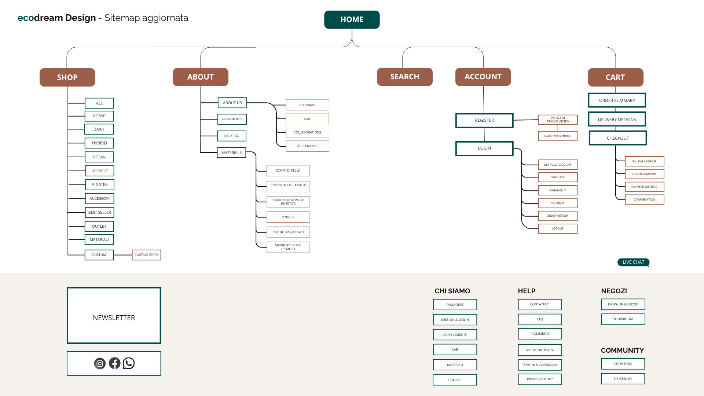

Redesigning a Sustainable Fashion Experience
A complete UX/UI redesign of Ecodream, an Italian sustainable fashion brand that transforms discarded materials into handcrafted bags and backpacks. The project focused on improving usability, accessibility, product discovery, and conversion while preserving the brand's values of sustainability, craftsmanship, and slow fashion.

Giving Materials a Second Life
Ecodream creates handcrafted bags and backpacks using reclaimed leather, fabrics, and recycled materials.
The brand promotes a more conscious approach to fashion through:
- Sustainable production
- Slow fashion principles
- Italian craftsmanship
- Cruelty-free alternatives


Understanding the Current Experience
An extensive discovery phase revealed several usability and accessibility issues affecting navigation and the shopping experience. Key challenges included:
- Difficult product discovery
- Lack of filters and wishlist
- Weak visual hierarchy
- Limited accessibility
- Low trust and support elements
- Inconsistent UI patterns
Building a User-Centered Foundation
The goal was to understand user expectations, identify friction points, and uncover opportunities for improvement. The research phase combined Heuristic Evaluation, an Accessibility Audit, Competitive Analysis, and user-focused methods like Surveys, Personas, and Journey Mapping.

Key Insights
Users struggled to browse and compare products efficiently due to the lack of filtering and clear categorization.
Important actions and product customization options lacked visibility, increasing cognitive load during checkout.
The website lacked reviews, clear FAQs, support features, and retention mechanisms like a wishlist.
Reorganizing the Experience
Based on research findings, the sitemap was completely restructured to improve:
- Navigation clarity
- Product discoverability
- User orientation
- Overall flow efficiency


Designing Better User Flows
The main user journeys were redesigned across both desktop and mobile platforms, focusing on simplifying navigation and reducing friction during the purchase journey.
Key screens included:
A Visual System Inspired by Nature
The interface was redesigned using a visual language aligned with Ecodream's core values of sustainability and craftsmanship.
Design Principles
Simplicity • Clarity • Accessibility • Sustainability
Visual Elements
- Earth-inspired color palette
- Responsive grid system
- Clear visual hierarchy
- Consistent components

Validating the Experience
A moderated remote usability test was conducted with participants matching Ecodream's target audience. The study focused on navigation intuitiveness, information architecture, first-click accuracy, and visual clarity. The results confirmed strong overall usability while identifying minor refinement opportunities.
The redesign transformed Ecodream's digital experience into a more intuitive, accessible, and conversion-oriented platform while staying true to the brand's sustainable mission.

Explore the Full Case Study
Discover the complete UX process, from deep research and strategy to wireframes, UI design, and usability testing results.
Read Full Case Study